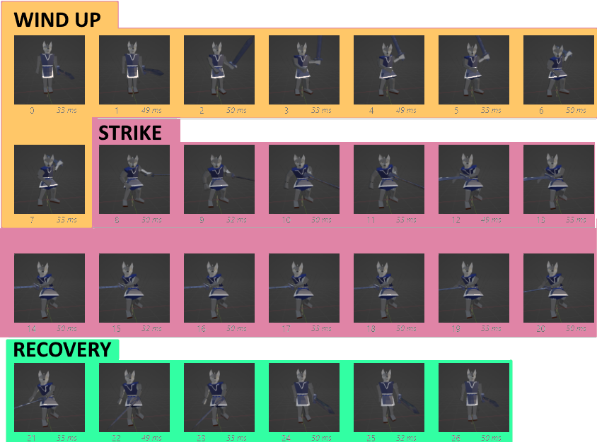
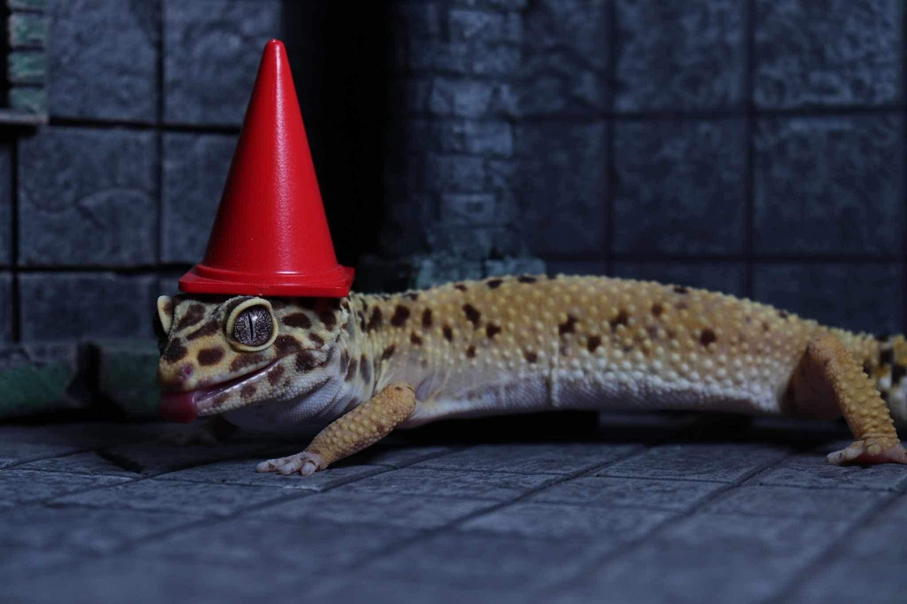

project hopping
hi all,
ive been project hopping
this month i worked on Micah, the mouse game i posted videos for earlier this year
Micah is an exploration game about finding and using different transformative effects, inspired by Yume Nikki
heres some out-of-context screenshots


ive ported the project from Love2D to Godot so that I can build it out faster
Orbital Terminus is very close to finished
thank you for reading, and see you next month
- ciaran

Orbital Terminus

hi all,
Silver Key progress has been slow, ive been designing and modeling environments. i hope to have more to show for that later.
in the meantime, ive been making a small space shooter
heres the first two stages:
the final game will have four stages, two of which are complete


thank you for reading and thank you for your patience. ill see you at the end of september
- ciaran

Silver Key - Phase II release
hi all,
Phase II of Silver Key is out! you can download it here: snorv.itch.io/silver-key.
you can read a list of changes here: snorv.itch.io/silver-key/devlog/770387/changelog-v02
the focus of this update was to create a workable player to use moving forward. using the discrete action system discussed last month, ive built out new weapons and made the players other abilities more modular. this means that seamless transition between actions (ie combos or dodge cancelling) will be simple to set up. theres also a lock on, which should make combat easier to manage.
everything lacks polish of course. theres currently no good way to select which enemy you lock onto. every player animation needs a few more passes. there are also some camera bugs i havent worked out yet. but this base will do for now.
Phase III will focus on blocking out the first level. the dungeon up until now has been a test level, so its likely none of it will remain. ill talk about how im structuring the first level next month.
my target for Phase III is the end of october.
until then, i would love to know your thoughts, thank you for reading, and see you in august!
- ciaran
Silver Key - discrete actions
hi all,
Phase II of Silver Key is progressing steadily. the player has a face now.
this month, i built a discrete action system. discrete actions are any action the player can perform that have a predefined ending and can't be done continuously. this includes attacking, dodging, and using items. its a broad category, but theres a lot of behavior that can be defined across all of them, and that will save a lot of time.
the anatomy of an action
the system is built around the player's animations. each animation has a wind-up, strike, and recovery.
during the wind-up, the player is locked into the action they are about to do. this is mostly just a delay, keeping actions from happening instantly and providing a bit of time for the enemy to interrupt the player, or vice versa.
the strike is the phase where the action is actually performed. in the case of an attack, enemies hit by the weapon during this phase will take damage. in the case of a used item, its effects will realize now.
the recovery is the time it takes for the player to return to their default state after the skill is complete. if the skill is part of a combo, the game will listen for another attack button press and return to the wind-up phase if it receives one. if the player pressed the attack button early during the strike phase, it will remember that during the recovery phase and initiate the combo, allowing for quick successive strikes.
each combo is simply a list of skills, and when the player progresses the combo, they simply proceed down the list.
i referenced Johnny Rouddro’s video: Godot 4 Hack and Slash #1 Active Skill when building it out.
current progress
features completed this month:
- player model updated
- weapons can be equipped and unequipped
- sword has a 3-hit combo, hammer has a 2-hit combo
- the player can lock on to enemies
features to be completed for Phase II
- spear and bow weapons
- animations for equipping and unequipping
- shield
- two new enemies
im still on track to release Phase II in august.
thank you for reading, and ill see you in july!
- ciaran

Silver Key - pathfinding
hi all,
the Silver Key prototype ive been working on for two months is out!
you can download it here: snorv.itch.io/silver-key.
the prototype contains a small section of overworld with a merchant, a small dungeon with 3 enemy types and a boss. i look forward to your feedback.
this prototype contains a lot of firsts for me. its the most fleshed out 3D character ive built, its my first time creating real-time combat in 3d, the inventory system is new, and the monster ai is more complex than any ive made before.
last month, i wrote about the state machine that manages the player. the monsters use a similar, greatly simplified state machine. this is what that looks like for basic enemies:
deceptively simple, maybe. "move to player if reachable" is a very complicated bit, it turns out. lets talk about pathfinding.
pathfinding

for my first implementation, the monsters moved on a square grid. the dungeon is built out of modular, cube-sized tiles, so i was able to pass that grid to the monsters in order for them to know which tiles around them were walkable. using that grid, they i programmed them with an A* search. in brief, A* is the name of a search method which prioritizes looking at locations with the smallest direct distance to the target. it starts by combing through every tile the monster can reach and assigning it a direct distance to the player. if there are no reachable tiles within melee of the player, we can assume the player is unreachable and give up.
heres the explanation of A* i referenced when building it out: youtube.com/watch?v=-L-WgKMFuhE

this implementation had a few problems
- the monsters could only move in eight directions. unless the monster had reached the player, they would only move between the centers of each square. as a result, movement looked very unnatural.
- monsters could not change elevation. they could only see the terrain grid for their current elevation, so if the base of a slope was on their elevation, they could climb the slope, but if the slope led to a tile on a different elevation, they would see it as empty space.
- if the grid is the only thing the monster factors in, it will collide with anything not on the grid- torches, chests, other monsters, etc. this causes monsters to get stuck endlessly walking into an object.

so what to do? the only long-term solution to #3 is to detect what the monsters will collide with. i hoped to minimize collision detection, as that can get very intensive on the cpu. if every enemy has to check every collider between themselves and the player, that could result in massive slowdown.
i mentioned last month that im working in Godot, and Godot has a useful feature for this called NavigationRegions. a NavigationRegion is an object that divides a group of colliders into triangles.

these triangles can be used for A* pathfinding in the same way you would use a square grid, with some advantages.
- since these triangles break down the space based off of adjacent colliders, they allow for much more natural movement than the grid. large, open areas will have few triangles, and monsters will move directly towards their target. small, condensed areas will have more triangles and monsters will move purposefully from triangle to triangle.
- triangles are not bound to a specific elevation. while a triangle cannot touch more than three adjacent triangles, the vertices can be anywhere in 3d space. this means that moving up and down slopes is simple.
- NavigationRegions detect colliders within its perimeter, and monsters can access which triangles are blocked when building a path. having the region track this information means that a large number of monsters can pathfind simultaneously without much stress on the system.
from there, the next important piece is behavior. melee monsters move towards the player constantly, while ranged monsters keep a safe distance. eventually, i want to explore more advanced behaviors, such as movement in formation.
Phase II?
im going to keep working on this project. the primary goal of Phase II is to expand combat. the player will have access to two new weapons in addition to the sword. each weapon will have multiple attacks. i will also refine the dodge, and i intend to make the player less clunky to control overall. to match the player’s new tools, im going to give the monsters more kinds of attacks and make them more versatile.
to support the player having multiple weapons, im going to add a gear menu. i want gear management to be a core part of the game, so Phase II will contain the minimum viable implementation of the gear system.
my target is to finish Phase II by the end of august. i will continue to post monthly updates to track my progress.
until then, if you play Silver Key, please share your thoughts. thank you for reading, and see you in june!
- ciaran
Silver Key ~ state machines
hi all,
its been 6 months since i released my last game, Vial Varmit, in october 2023. since then, ive started two projects: Silver Key, and untitled mouse game. both were conceived as low-intensity games that i would be able to finish quickly. both ballooned into projects that i wanted to give more time and care. while id really like to release regular, little games, i think it will be more productive to make what im passionate about. so, i've restarted Silver Key in 3d.


since this project is significantly more ambitious, im keeping a taskboard in GitHub. the tasks are organized into Phases, where Phase I is the initial prototype. i am going to release the Phase I prototype before the end of may.
whats In Phase I?
Silver Key Phase I features one small dungeon and a small section of overworld. in the overworld, the player can purchase goods from a merchant and store items. in the dungeon, the player will find three enemy types, as well as silver currency and other items.
the primary goal and most difficult aspect of this phase is making the player comfortable to control. the player can attack, run, dodge, block, and use items from their inventory. similar to other games ive made, the player uses a state machine. a state machine is a kind of diagram where every action a player can take has a list of properties and connections to other actions. for example, when the player dodges, they gain the intangible property- damage phases through them- until the dodge ends and they return to the default state. if the player attacks, they gain the property of dealing damage, become immobile, and can leave the state by either finishing the attack and returning to the default state, or by being damaged and interrupted, starting the damaged or possibly death state.
these states can get even more granular. youd likely want to separate an attack into three states, attack start, attack damage, and attack end. during attack start, the player raises their arm to strike. no damage is dealt during attack start as that wouldnt make sense. once attack start has ended, it leads into the attack damage state, followed by the attack end state. during the attack end state, the player may return to their default state or may initiate a combo. all of these states could potentially be interrupted by enemy damage, with different consequences.
this is the current player state machine:
this is the simplest state machine i could make for the prototype. in later phases, i will add more granularity, but im simplifying the number of states so that i can focus on making the transitions feel right.
current progress

the player actions, inventory, and dungeon are all implemented. enemies have some logic and simple pathfinding. one of the three intended enemies is in a playable state.
keeping a taskboard has been really useful. i thought it would be tedious as a solo-developer, but the board has made it easy to decide what tasks need to be done, and which tasks i should save for later. its also really encouraging to keep a list of completed tasks.


thats it for april! ill see you in a month when the prototype is complete!
- ciaran

february status
hi all,
i still dont have a name for this project, but I have two new videos for it
- ciaran
PLAY BOXIBAN
new video for an untitled project
- ciaran